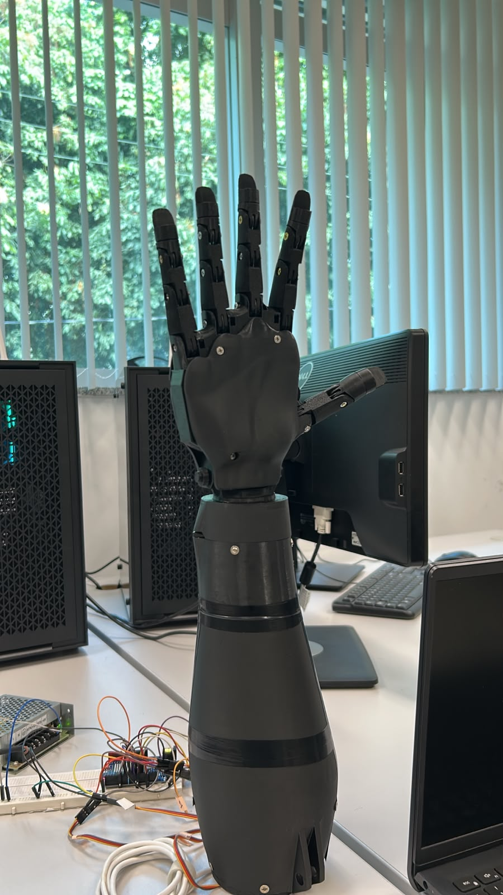
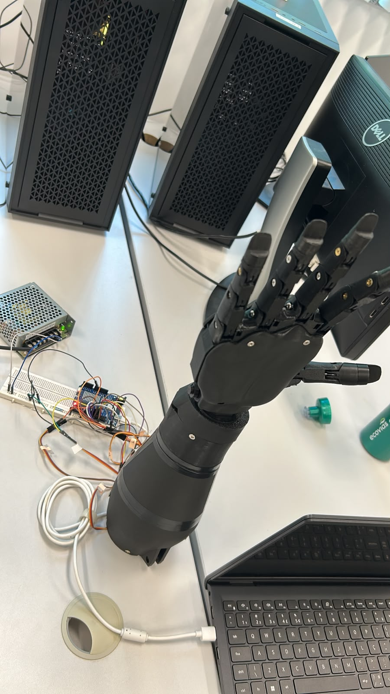

Protótipo de mão robótica de baixo custo, com cinco dedos funcionais e rotação de pulso, capaz de reproduzir configurações de mão (CMs) da Língua Brasileira de Sinais (LIBRAS) a partir de comandos de voz ou texto, interpretados por um modelo de linguagem (LLM) local.
Projeto desenvolvido para a disciplina de Projeto Integrado em Computação II (PIC2) do curso de Engenharia de Computação da Universidade Federal do Espírito Santo (UFES).
Status do projeto: ✅ Finalizado / funcional.
🔗 Repositório público (GitHub): https://github.com/gk27min/Mao-Robotica-com-Movimentacao-de-Pulso


Protótipo final montado e a bancada de operação (Arduino Uno R4 WiFi, fonte, protoboard e servidor Python no notebook).
A FalaComaMão é uma mão robótica antropomórfica impressa em 3D que traduz linguagem natural em gestos de LIBRAS. O usuário fala ou digita uma frase no aplicativo; um LLM rodando localmente interpreta a intenção e a converte em um código de gesto; esse código é enviado por rede até um servidor Python, que o retransmite via Bluetooth Low Energy (BLE) para um Arduino, o qual aciona os seis servomotores para reproduzir a configuração de mão correspondente.
O foco do projeto é acessibilidade e comunicação a um custo muito inferior ao de soluções comerciais, usando exclusivamente hardware aberto, impressão 3D e software livre.
┌─────────────┐ Voz/Texto ┌──────────────────┐ HTTP/JSON ┌─────────────────┐
│ App Flutter │ ────────────► │ Servidor Python │ ────────────► │ LLM local │
│ (FalaComaMão)│ /api/comando│ (FastAPI) │ │ Ollama (llama3.1)│
└─────────────┘ └──────────────────┘◄──────────── └─────────────────┘
▲ │ código do gesto (ex.: 7)
│ feedback no chat │
│ ▼ BLE (bytearray[código])
│ ┌──────────────────┐ PWM ┌─────────────────┐
└───────────────────────│ Arduino Uno R4 │ ─────────► │ 6× Servo MG995 │
│ WiFi (BLE) │ │ (5 dedos + pulso)│
└──────────────────┘ └─────────────────┘